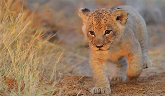
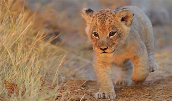

Página de leones
Imágenes de leones
 

Si quieres ver más imágenes de leones, da click en este enlace.
Listas de leones
3 cosas que los leones aman
- Vivir en manada e interactuar con otros leones
- Cazar a sus presas
- Dormir mucho
3 cosas que los leones odian
- Los puercoespines, por sus puas
- No les gusta comer humanos
- Cazar de día